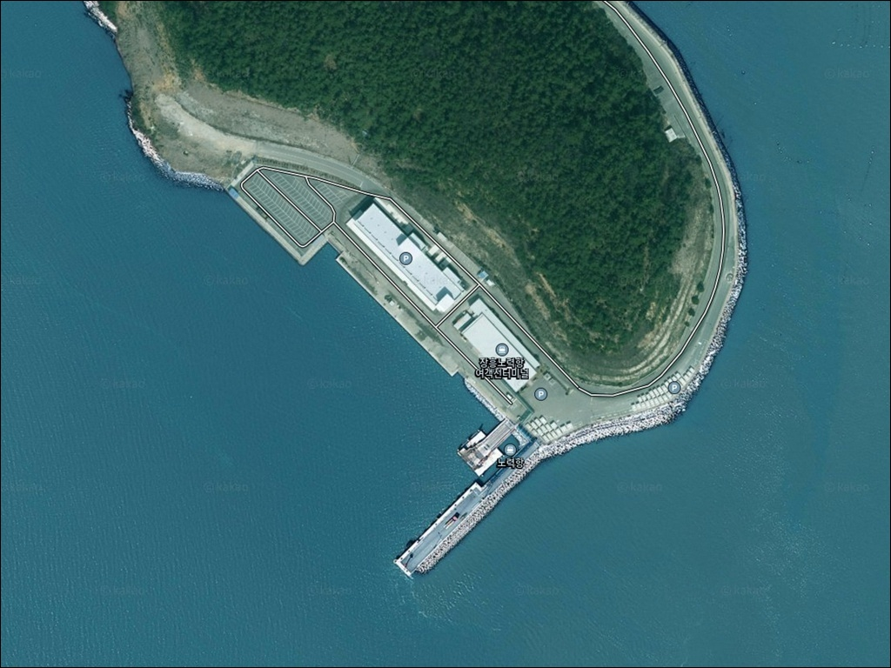
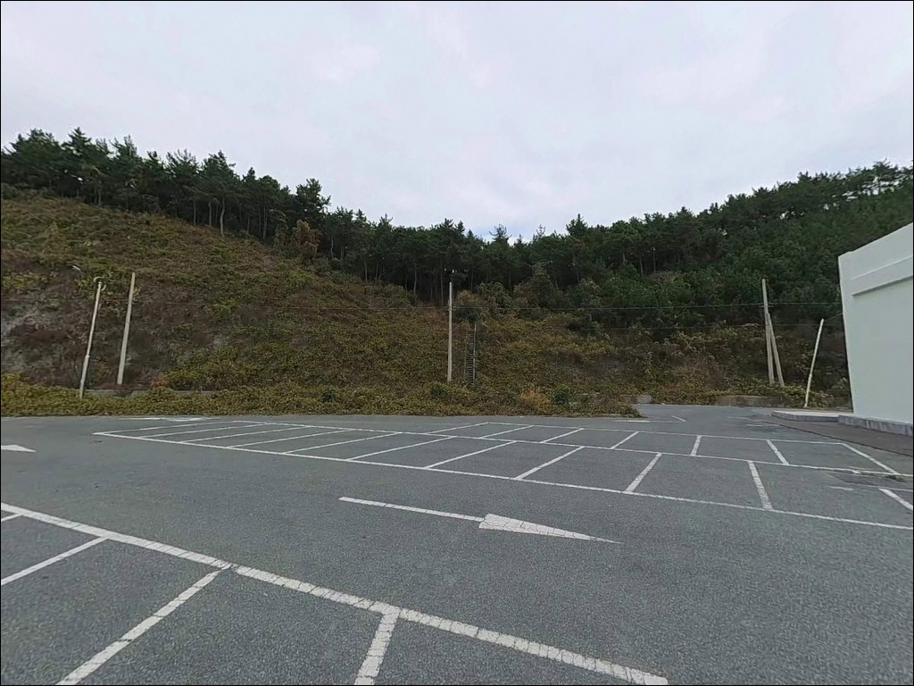
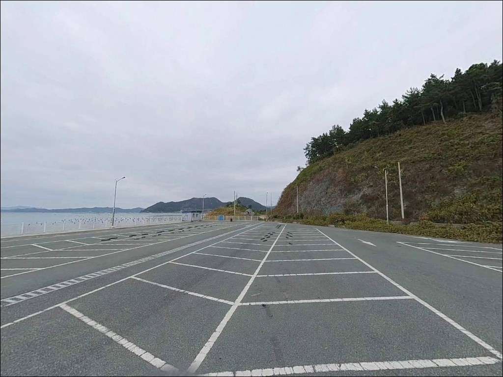
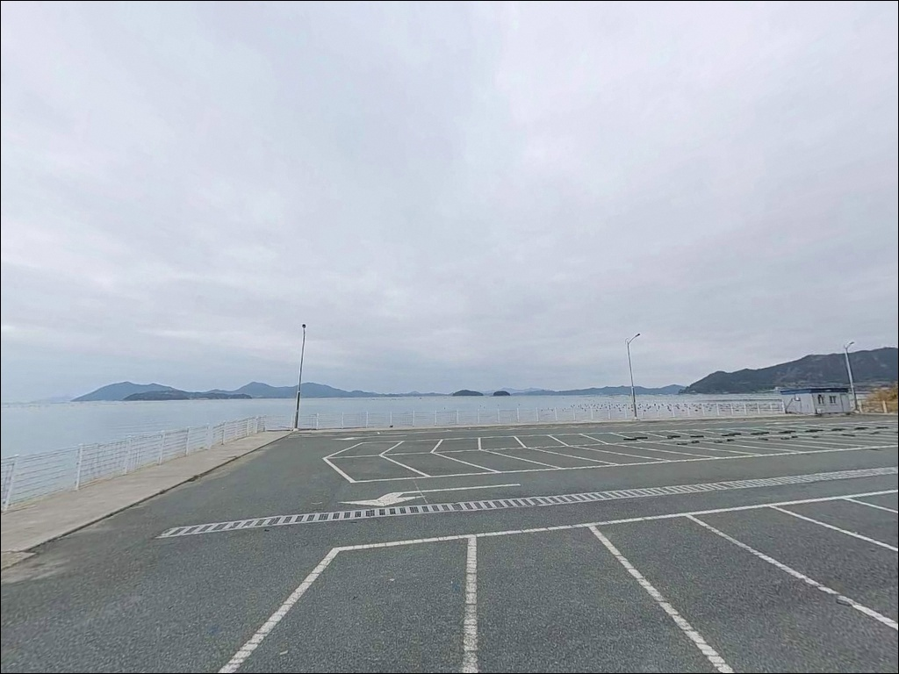
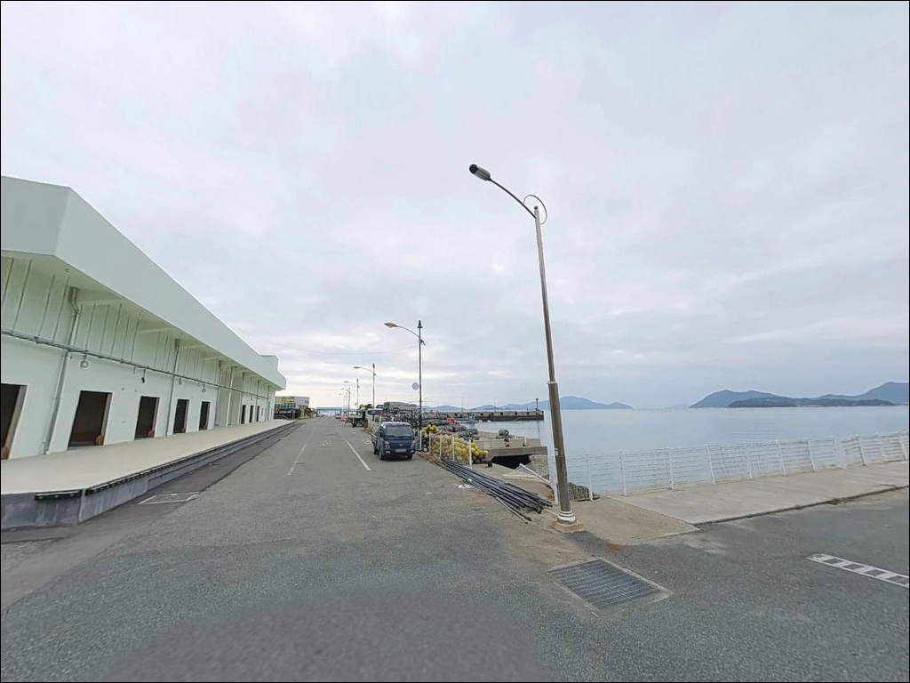
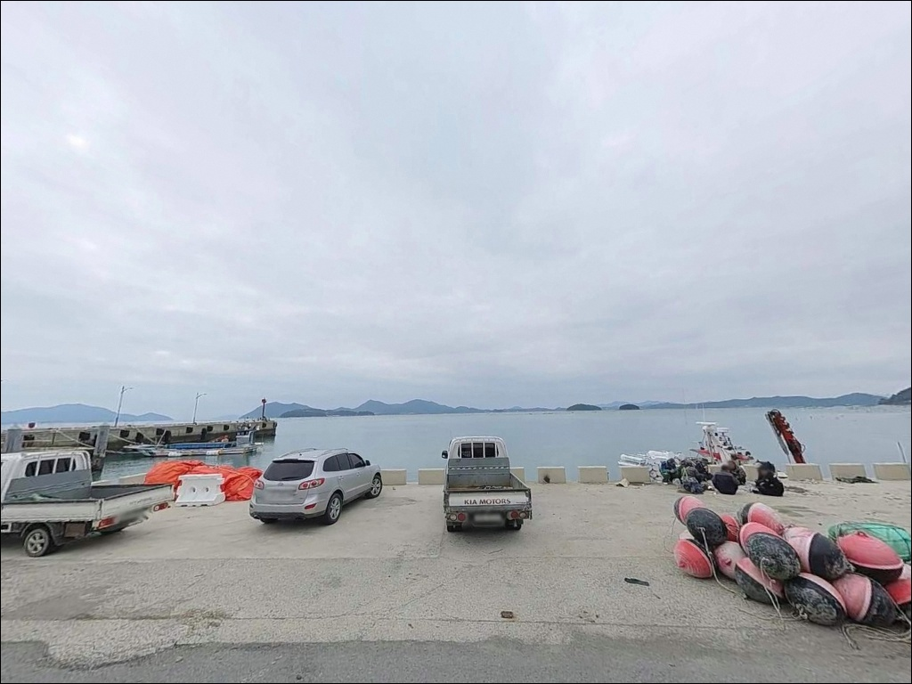
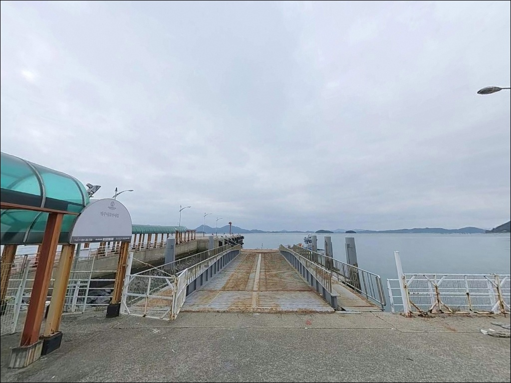
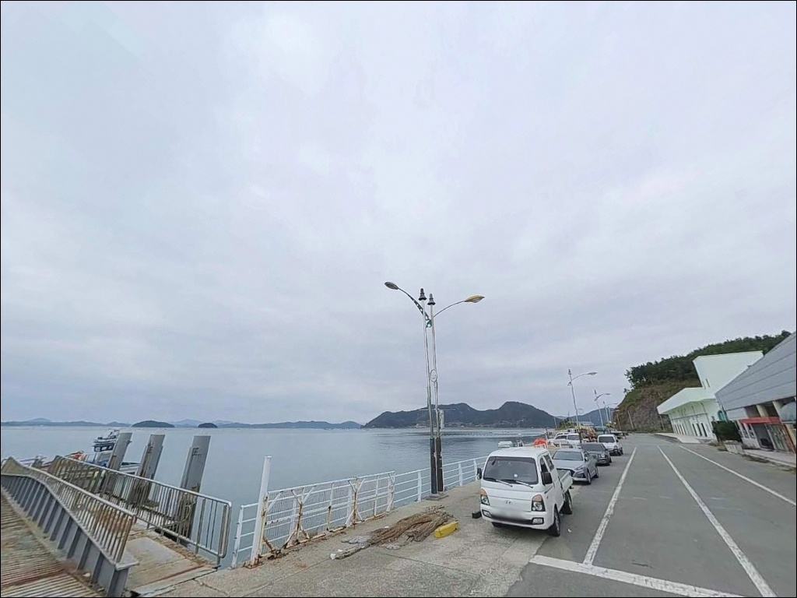
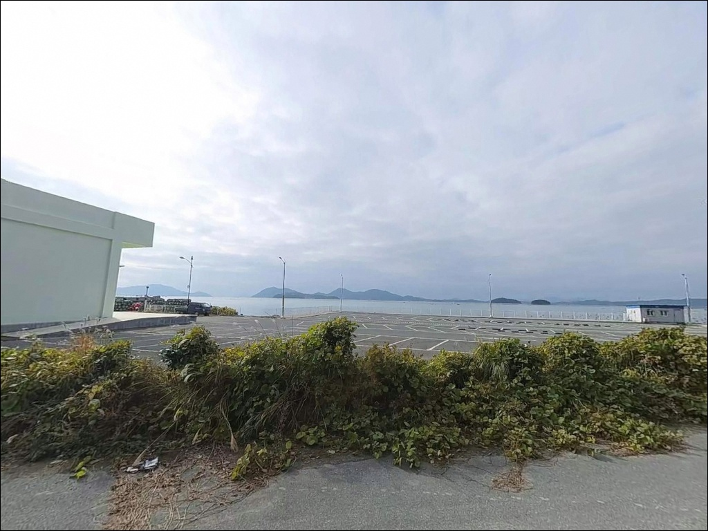

이 페이지에는 광고(제휴 링크 포함)가 있으며, 광고 링크를 통해 구매하면 운영자가 판매 수익 또는 수수료를 받을 수 있습니다. 포인트 사진: 카카오맵 스카이뷰·로드뷰. 이 페이지의 지도·사진 이미지는 카카오맵의 실제 서비스 이미지와 다를 수 있습니다.

노력항
전남 장흥군 회진면 덕산리 2107-27
노력항 방파제 끝단에서 조류가 셀 때 채비를 내리면
봉돌이 흘러버려 입질 감지 자체가 어려워집니다.
이 포인트는 득량만 서쪽 입구라는 지형 특성상
물때에 따라 조류 세기 차이가 크고,
정조 전후 타이밍을 먼저 계산하지 않으면
외항 방파제를 제대로 활용하기 어렵습니다.
전남 장흥군 회진면 덕산리,
노력도에 위치한 노력항은
회진대교(2006년 완공)를 통해
차량이 직접 진입할 수 있는 연육교 항구입니다.
어촌뉴딜300 사업으로 방파제가 130m까지 확장되었고,
항구 광장 일대에 넓은 주차 공간이
정비되어 있습니다.
이 글은 노력항의 진입 동선, 차박 여건,
지형 기반 낚시 조건, 스타일별 공략 방향에 집중합니다.
조황 단정이나 특정 어종 보장은
이 글의 범위에 포함되지 않습니다.

노력항은 장흥읍에서 국도 23호선을 이용해
회진면 방향으로 이동한 뒤,
회진대교를 건너 노력도에 진입하는 동선이 기본입니다.
장흥읍에서 약 30분, 회진면 소재지에서
약 15분 거리로,
전 구간 포장도로가 항구까지 이어집니다.
회진대교 통과 후 노력도 내부 도로는
1차선 폭 기준의 농어촌 도로 구간이 포함됩니다.
항구 방향 끝부분에서 회차 공간이 확보되어 있어
일반 승용차 기준 회차에는 어려움이 없는 편이며,
대형 SUV나 캠핑카라면
출발 전 도로 폭을 미리 확인해 두는 것이 안전합니다.
주차는 어촌뉴딜300 사업으로 정비된
항구 광장 일대를 활용할 수 있습니다.
승용차 수십 대 이상을 수용할 수 있는 면적이며,
방파제 진입부 근접 평지와
물량장 남측 어선 접안 구역 옆 여유 공간도
주차 후보지로 활용이 가능한 구조입니다.

노력항 항구 광장 일대는
주차 공간이 넓고 발판이 평탄하여
낚시 후 그대로 차 안에서 하룻밤 머무는
차박 운용에 적합한 구조입니다.
여객선 터미널 주변과 어항 시설 가로등이 켜져 있어
야간에도 기본적인 시야가 확보되는 환경입니다.
민가와 어업 시설이 항구 후면에 산재해 있어
완전한 고독 환경은 아니지만,
야간 차량 통행이 드문 편이라
수면 방해 요소는 많지 않은 편입니다.
외항 방향으로 개방된 지형 특성상
남서풍이 강한 날에는 바람 영향을 받으므로,
기상 확인 후 차량 방향을 조정하는 것이 기본입니다.
차박이란 차량을 숙박 공간으로 활용하며
현장에서 하룻밤 머무는 여행 방식입니다.
노력항은 낚시와 차박을 동시에 운용하기 좋은
항구형 구조를 갖추고 있어
차낚 동선의 거점으로 활용하기에
어울리는 포인트입니다.

노력항 반경 3km 이내,
회진대교를 건너 회진면 소재지 방향으로
약 15분 이동하면 편의점과 식당을 이용할 수 있습니다.
낚시 소품이 필요하다면
회진면 일대 낚시점을 활용하는 편이 현실적이며,
대형마트나 주유소는 장흥읍권(20~25km)까지
이동해야 합니다.
항구 내 어촌뉴딜 사업으로 조성된
노력휴식걸음길과 노력휴양공원이 있어
낚시 중간 휴식 공간으로 활용이 가능합니다.
응급 상황 발생 시 장흥읍까지 거리가 있으므로
비상약품과 충분한 식수는 출발 전 준비하는 것이
기본 원칙입니다.

노력항을 방문하기 전 가장 먼저 확인할 것은
물때입니다.
노력도가 위치한 득량만 서쪽 입구는
조류 흐름이 분명하게 형성되는 해역으로,
방파제 끝단과 항 입구 쪽은
물때에 따라 채비 운용 가능 여부가 달라집니다.
바다타임에서 회진면 기준 물때를 확인하고
정조 전후를 노려 출발 시각을 맞추는 것이
기본 전략입니다.
외항 방파제 끝단은 테트라포트 구간이 포함되어 있어
미끄럼 방지 신발과 구명조끼는 필수입니다.
야간 낚시를 계획한다면 헤드랜턴을 반드시 챙기고,
방파제 외항 측은 파도 영향을 직접 받는 구조이므로
기상청 해양 예보를 당일 아침에 한 번 더
확인하는 것이 안전합니다.
어촌정주어항 특성상
어업인의 접안 구역과 조업 장비 주변은
진입을 삼가는 것이 기본 매너입니다.
낚시 후 쓰레기는 전량 회수하고,
차박 시 소음과 조명이
인근 주민에게 영향을 주지 않도록
주의가 필요합니다.

노력항의 낚시 여건은 방파제 구조와 수심으로
설명됩니다.
어촌뉴딜300 사업으로 확장된 130m 방파제는
외해 방향으로 길게 뻗어 있으며,
끝단 쪽으로 갈수록 조류 소통이 활발해집니다.
외항 측 수심은 8m 이상으로 깊고,
항 입구와 방파제 끝단 부근에서는
수심이 급변하는 구간이 형성됩니다.
내항 물량장 측은 수심 3~5m 구간으로
파랑 영향을 어느 정도 차단하는 구조입니다.
원투낚시의 근거리 탐색과 찌낚시 발판으로
활용하기 적합하며,
방파제 외항 테트라포트 경계부는
수중 구조물과 바닥 경계가 만나는 구간으로
어종 은신처 역할을 합니다.
득량만 서쪽 입구라는 위치 특성상
이 일대 해역은 계절에 따라 다양한 어종이
접근하는 패턴을 보입니다.
방파제 끝단은 조류 변화가 크기 때문에
정조 직후 타이밍에 낚시 효율이 올라가는
구간입니다.
출조 전에 노력항 낚시, 장흥 방파제 조황 키워드로
최신 현장 상황을 반드시 확인하시기 바랍니다.

노력항 외항 방파제에서 가장 효과적인 방식은
찌낚시입니다.
방파제 외항 방향에서 조류를 따라 흘리는
구멍찌낚시가 이 지형에 잘 맞는 스타일이며,
득량만~회진면 일대 해역에서
감성돔과 농어 서식이 확인된 수계이므로
시즌 타이밍에 찌낚시를 주력으로
운용해 볼 수 있습니다.
원투낚시는 내항 물량장과 방파제 내항 측에서
유효합니다.
바닥이 뻘·모래 구조로 이루어진 구간이 포함되어
밑걸림이 적은 편이며,
인근 해역 특성상 붕장어와 도다리,
노래미를 기대해 볼 수 있는 방식입니다.
정조 타이밍에 채비를 멀리 보내
바닥 탐색에 집중하는 방식이 어울립니다.
루어·에깅도 이 포인트 구조에 맞습니다.
방파제 끝단과 외항 테트라포트 인근에서
소형 미노우 또는 지그헤드 웜을 운용하면
농어 계열 어종을 기대해 볼 수 있습니다.
가을 시즌에는 갑오징어 에깅도 대응 가능한
수심 조건을 갖추고 있습니다.
야간에는 방파제 내항 측에서
볼락 라이트게임도 운용해 볼 수 있는 지형입니다.

노력항 방파제가 혼잡하거나
기상 여건이 외항 측 낚시를 어렵게 만들 때,
첫 번째 대안은 회진항입니다.
노력항에서 약 4~5km 거리에 위치한
회진면 중심 항구로, 규모가 더 크고
낚시 가능 구간 선택 폭도 넓은 편입니다.
현지 어종 패턴을 파악하기에도 유리한 거점입니다.
공영 낚시 시설을 원한다면
정남진 해양낚시공원이 대안입니다.
노력항에서 약 6km 거리의 회진면 대리에 위치하며,
데크형 발판이 갖춰진 바다낚시터로
원투·찌낚시가 주요 방식입니다.
운영일은 수~일요일이며,
방문 전 061-867-0555로 확인하는 것이 좋습니다.
차박 거점을 바꾸고 싶다면
회진항 인근 물량장 광장이 대안입니다.
노력항보다 차량 통행이 빈번하지만
주차 공간이 넓고
회진면 소재지 편의 인프라 접근이 빠른 편이라
장기 체류 시 활용도가 높습니다.

130m 방파제에 넓은 주차 공간,
야간 조명까지 갖춘 노력항은
찌낚시·원투·루어·에깅까지
복수의 낚시 방식으로 대응이 가능한
균형형 포인트입니다.
특히 방파제 끝단은 조류 소통이 활발한 지형이라
정조 전후 타이밍을 노린다면
채비 운용 효율이 크게 달라집니다.
반면 조류가 강한 사리 전후에
외항 끝단에 자리를 잡으면
채비 컨트롤이 어려워지는 구조이므로,
물때 확인 없이 진입하는 것은 피하는 편이 좋습니다.
기상 예보 확인, 테트라포트 이동 시 안전 장비,
어선 작업 동선 배려 — 이 세 가지를 갖추면
노력항의 낚시 여건을 제대로 활용할 수 있습니다.
방파제 옆 넓은 광장에 차를 대고
조류가 멈추는 타이밍을 기다리며
득량만 물결을 바라보는 밤 한 번이면,
노력항이 왜 장흥 남해안에서
차낚 거점으로 꾸준히 찾는 포인트인지
느낄 수 있을 것입니다.